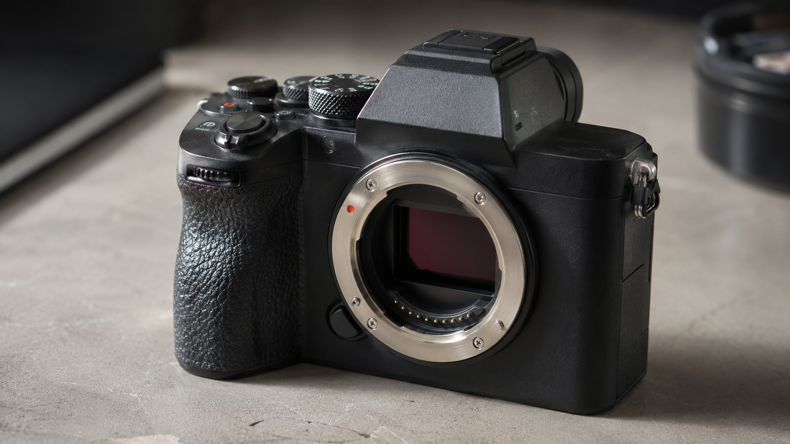

← BACK TO DOSSIERS LIST
REALISM CASE FILE // TREND: CALIBRATING SONY A7R V PROMPTS FOR HIGH-RESOLUTION COMMERCIAL REALISM
Film-Style Camera Realism: Rebuilding a Premium Product Shot Beyond Default AI Aesthetics
DATE: 2026-07-04
STATUS: CALIBRATED_REALISM
ENGINE: CHATGPT DALL-E 3

SPECIMEN IMAGE #16:9 - CLEAN OPTICS
Many AI-generated product photographs immediately reveal themselves through repetitive visual habits: exaggerated sharpness, flawless materials, impossible reflections, and lighting that feels designed for spectacle instead of physical plausibility. A truly convincing commercial camera image is built from observation, manufacturing behavior, optical limitations, and material interaction rather than visual exaggeration.
In the following calibration framework we deconstruct the image through five interconnected layers: subject, environment, physics, time, and camera behavior. Each layer contributes measurable realism, but the deeper transformation happens at the language level. The calibration console presented afterward demonstrates how carefully chosen lexical substitutions quietly replace synthetic visual assumptions with physically grounded photographic descriptions.
The lexicon shift is not cosmetic. Replacing abstract expressions such as "perfect lighting" or "ultra sharp" with descriptions tied to optics, materials, illumination geometry, and sensor behavior encourages image models to generate observations instead of idealizations. Combined with realistic capture parameters, restrained processing, and physically plausible wear, these calibration metrics produce imagery that resembles authentic commercial photography instead of generic AI aesthetics.
Returning to the original challenge, camera-grade realism is achieved by describing how reality behaves rather than how perfection appears. If you want a complete methodology for realism calibration, prompt engineering, and language-level film-style reconstruction, explore ALPHA REALISM and continue with the complete ALPHA REALISM Guide.
The 5 Layers of Reality Applied
Subject:
A high-end interchangeable-lens camera body resting naturally on a neutral surface. Magnesium-alloy shell with subtle machining marks, lightly textured rubber grip showing realistic micro-wear from handling, engraved control labels with slight paint variation, glass display reflecting surrounding objects without exaggerated clarity, visible screws, seams, ports, buttons, dials, and mount flange preserved without cosmetic perfection.
Environment:
A practical tabletop studio using large diffused window light combined with soft reflected fill from nearby matte surfaces. Gentle shadow transitions, realistic edge falloff, restrained specular reflections on metal and coated glass, slight ambient bounce, controlled but naturally imperfect illumination with subtle brightness variation across the scene.
Physics:
Gravity settles the camera firmly against the surface. Soft reflections vary according to material roughness. Fine airborne dust is visible only where illuminated. Fingerprint oils slightly alter reflectivity on high-contact areas. Metal edges exhibit physically plausible micro-specular highlights while textured rubber diffuses light unevenly.
Time:
Very light evidence of real ownership including microscopic dust accumulation in creases, faint polishing around frequently touched controls, minimal coating wear on edges, slight variation in anodized finish, and naturally accumulated handling marks without damage or neglect.
Camera:
Full-frame mirrorless camera simulation, approximately 85 mm macro lens at f/8, ISO 100, 1/125 second, tripod-mounted, RAW workflow, neutral white balance, restrained sharpening, realistic sensor grain, natural diffraction, subtle lens vignetting, accurate color response, preserved highlight roll-off, no artificial HDR look, no excessive clarity processing.
The Lexicon Shift Table
| Appearance (Dead Adjective) |
|
Living Event (Cause & Effect) |
| ultra sharp product photo |
➔ |
optically consistent detail with realistic lens resolution limits |
| perfect lighting |
➔ |
large diffused window light with subtle exposure variation |
| flawless metal finish |
➔ |
machined metal showing microscopic handling variation |
| clean reflections |
➔ |
material-dependent reflections with restrained intensity |
| highly detailed texture |
➔ |
surface microstructure resolving naturally according to viewing distance |
| professional commercial look |
➔ |
physically believable product documentation with controlled studio practice |
| cinematic lighting |
➔ |
broad diffused daylight with practical reflected fill |
| perfect shadows |
➔ |
soft contact shadows with realistic edge transition |
Calibration Prompt Console
Subject Layer: A premium interchangeable-lens camera body placed naturally on a matte neutral tabletop, magnesium-alloy construction, textured rubber grip, engraved controls, realistic machining marks, subtle fingerprints, microscopic dust in recessed areas, authentic manufacturing tolerances, physically believable surface variation. Environment Layer: Practical tabletop studio using diffused window light and matte bounce surfaces, restrained reflections, natural shadow gradients, clean but non-sterile workspace, realistic background falloff without artificial isolation. Physics Layer: Gravity-driven placement, physically accurate reflections, energy-conserving materials, slight oil residue modifying reflectance, fine airborne dust only where illuminated, accurate metallic highlight behavior, optical glass responding naturally to ambient surroundings. Time Layer: Light signs of handling including minor polishing on frequently touched controls, subtle coating variation, faint edge wear, tiny dust accumulation, preserved manufacturing texture without exaggerated aging. Camera Layer: Full-frame mirrorless capture, 85 mm macro lens, f/8, ISO 100, 1/125 second, tripod, RAW color science, neutral white balance, restrained sharpening, realistic sensor grain, subtle vignetting, accurate highlight roll-off, no HDR artifacts, no artificial clarity boost, no CGI appearance, documentary-grade physical realism, commercial product documentation rather than stylized advertising --ar 16:9
Do you want to generate precise AI images?
Unlock our alpha realism blueprint, physical reliable framework to get the best of your creations with the ALPHA REALISM Guide.
Download Ebook Now